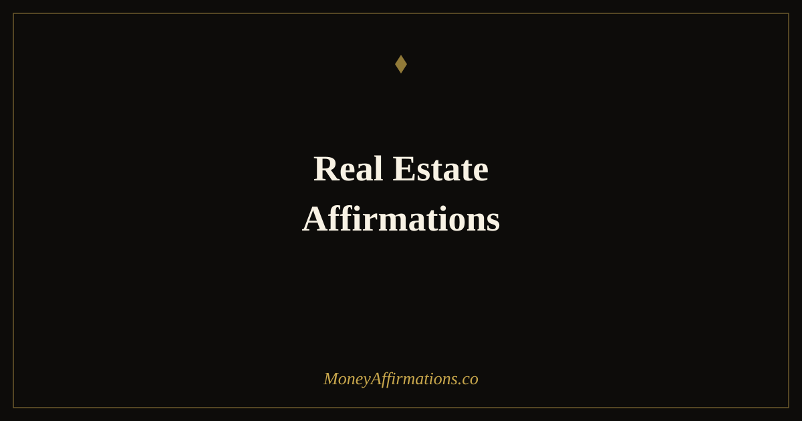

Real Estate Affirmations: 35 Statements for Property Wealth

Property wealth is built on two foundations: sound financial strategy and the psychological readiness to act on it. Most people who educate themselves about real estate investing and still never buy a single property are not stopped by a lack of knowledge — they are stopped by a set of internal beliefs that make ownership feel risky, inaccessible, or simply not meant for them. Those beliefs are addressable. Real estate affirmations work on exactly the internal layer that turns opportunity into ownership.
These 35 real estate affirmations are designed for anyone building toward property wealth — whether you are researching your first purchase, growing a portfolio, or simply beginning to think of real estate as a viable path to financial independence. Used consistently alongside practical education and deliberate action, they remove the psychological friction that separates knowledgeable observers from actual property owners.
What are real estate affirmations?
Real estate affirmations are present-tense statements that align your identity and beliefs with the reality of being a property owner and investor. They address the specific fears and mental patterns that most commonly block property wealth: the belief that large amounts of money are beyond you, fear of making a wrong decision, imposter syndrome around negotiations and financing, and the persistent sense that real estate success belongs to a different kind of person.
Property investing is one of the most proven vehicles for long-term wealth creation. The barriers that prevent most people from accessing it are as much internal as external. Real estate affirmations target the internal barriers — not to replace financial preparation, but to ensure your mindset is working toward ownership rather than away from it. When belief and strategy work together, the path to property wealth becomes significantly clearer. For broader wealth-building support, the wealth affirmations collection provides a strong foundation.
35 real estate affirmations
- I am a confident and capable real estate investor building long-term wealth through property.
- I attract the right properties, the right deals, and the right financial opportunities at the right time.
- Owning real estate is a natural and achievable part of my financial life.
- I understand real estate and I use that knowledge to make sound investment decisions.
- My property portfolio grows steadily and generates increasing passive income for me.
- I am comfortable with the numbers, the process, and the responsibility of property ownership.
- Real estate is one of my most powerful vehicles for building generational wealth.
- I make clear, confident decisions when evaluating properties and structuring deals.
- The right financing, the right agents, and the right mentors find me because I am ready.
- I am not intimidated by large transactions — I am energised by the opportunity they represent.
- I negotiate with calm authority and secure terms that work in my favour.
- My rental properties provide consistent, reliable income that grows my financial freedom.
- I approach every property decision with clarity, patience, and sound financial judgment.
- I am building the kind of wealth through real estate that lasts well beyond my lifetime.
- Each property I own increases my net worth and my monthly cash flow.
- I belong in the room with experienced investors and I learn from every interaction.
- My research, preparation, and due diligence lead me to excellent investment decisions.
- I see real estate opportunities that others overlook because I am always learning and looking.
- I manage my properties and my portfolio with organisation, professionalism, and confidence.
- The equity in my properties is building quiet, powerful wealth every single day.
- I am not waiting for the perfect market — I find the right opportunity in any market.
- Every property transaction teaches me something that makes the next one more profitable.
- My net worth grows significantly each year through smart, strategic real estate decisions.
- I trust myself to evaluate a property, understand its potential, and act with conviction.
- I attract tenants who respect and care for my properties as I do.
- Real estate income supplements and eventually replaces my active income, giving me true freedom.
- I am resourceful and creative in finding ways to acquire, improve, and profit from property.
- I release the fear of making a large financial commitment and step into the opportunity it represents.
- My real estate investments provide stability, growth, and legacy for my family.
- I understand leverage, equity, and cash flow — and I use them intelligently to grow my wealth.
- Every month my property assets increase in value while my tenants help service my investment.
- I am the kind of person who owns and grows real estate — this is who I am becoming.
- I act decisively on strong deals because I have done the work and I trust my judgment.
- My real estate portfolio is a cornerstone of my long-term financial independence.
- I am grateful for every property I own and every step I take toward owning the next one.
How to use these affirmations
The most effective approach is to integrate real estate affirmations into both your daily practice and the specific moments where fear or hesitation arise. Each morning, choose three affirmations and say them aloud while also doing one concrete action toward your real estate goals: reading a market report, running the numbers on a property, speaking to a broker, or reviewing a listing. The affirmation sets your identity; the action reinforces it with evidence.
Before any property-related event that brings up anxiety — an offer, a negotiation, a meeting with a lender — use three to five affirmations in the five minutes beforehand. This is not superstition; it is deliberate psychological preparation. The self-concept you carry into a negotiation directly shapes how you present yourself, what you ask for, and whether you walk away from a bad deal or accept it out of fear. Real estate investing is a long game, and these affirmations help you show up at your best for every step of it.
Why investor identity is the missing piece in property wealth
Research into financial decision-making consistently shows that identity — how people see themselves in relation to money and investing — is one of the strongest predictors of whether they take wealth-building action. People who carry a clear investor identity make different choices than those who see investing as something other people do. They evaluate rather than avoid, they ask questions rather than deferring, and they act on opportunities rather than second-guessing until the window closes.
In real estate specifically, the gap between those who succeed and those who do not is rarely a knowledge gap — it is an identity gap. Successful property investors describe the moment they stopped thinking about real estate as a distant possibility and started seeing themselves as people who own and grow property. That identity shift precedes the first purchase, not the other way around. Real estate affirmations accelerate exactly that shift, building the investor self-concept that turns education and opportunity into action. The financial outcomes — equity, passive income, portfolio growth — follow from that identity, consistently and over time.
Tips to make them work faster
- Pair each affirmation with a single property action daily. Review one listing, read one market article, or run the numbers on one deal. Belief without action is theory; action without belief is friction. Together they compound.
- Focus on the identity, not just the outcome. "I am a confident real estate investor" is more powerful than "I want to own property." The identity statement changes how you move through the day.
- Use them before fear-inducing steps. Making an offer, calling an agent for the first time, asking about financing — these are the moments where the right affirmation changes everything.
- Track every property action you take. Viewed a listing, spoke to a broker, attended an open house — write it down. You are building evidence of who you are becoming.
- Study alongside the practice. Affirmations and education reinforce each other. Every thing you learn about real estate makes the affirmations more grounded and more believable.
Frequently Asked Questions
Can affirmations really help with real estate investing?
Affirmations do not replace market knowledge, financing, or due diligence — but they address the psychological barriers that stop many capable people from ever getting started. Fear of large sums, analysis paralysis, imposter syndrome around property ownership, and the belief that real estate is 'for other people' are all internal states that affirmations directly target. Many investors report that their biggest obstacle was not knowledge or capital but belief. Affirmations work on that layer.
When is the best time to use real estate affirmations?
Use them daily as part of a morning practice, and specifically before any property-related action that brings up fear or resistance: making an offer, speaking with a mortgage broker, reviewing financials on a deal, or attending a property viewing. The moments just before these actions are when self-doubt is loudest and affirmations are most useful. Three to five statements said aloud before entering those situations changes the psychological state you bring to them.
What if I cannot afford to invest in real estate right now?
Affirmations work on a longer time horizon than the present moment. Building the identity of a property investor — someone who studies markets, understands financing, thinks in long-term assets — creates the orientation and behaviour that moves you toward that goal even when resources are limited. The investor mindset, built through consistent affirmation and education, is what attracts the relationships, knowledge, and eventually the capital needed. Starting with belief is not naive; it is the correct sequence.
Property wealth is one of the most accessible forms of long-term financial freedom for those who commit to building the right mindset alongside the right knowledge. Explore the full wealth affirmations collection for a complete set of statements that support every dimension of your financial future.